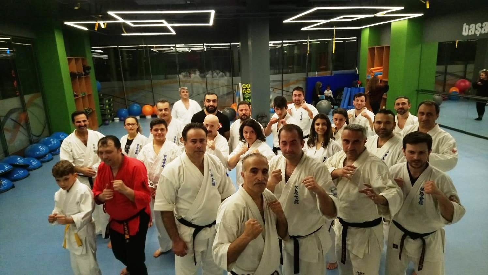

Shoto no Maai — Yakın Mesafe
Rakibe en yakın mesafe; dairesel bir adımla anında karşı tekniğe geçilebilecek konum.
Sabaki felsefesi, mesafe kontrolü ve dojo değerlerimiz.
Ashihara Karate (Ashihara Kaikan), 1980 yılında Kanchō Hideyuki Ashihara tarafından kuruldu.
Sistemin merkezinde 'sabaki' yer alır: rakibin saldırısından dairesel bir hareketle kaçınmak ve karşı saldırıya geçmek.
Ashihara'nın öğretisi kata'yı doğrudan uygulanabilir dövüş senaryolarına dönüştürmesiyle bilinir.

Rakibe en yakın mesafe; dairesel bir adımla anında karşı tekniğe geçilebilecek konum.
Ne çok yakın ne çok uzak; sabaki hareketinin en sık uygulandığı ara mesafe.
Rakibin darbe menzili dışında kalınan, zamanlama ve pozisyon üstünlüğü sağlayan mesafe.
Ashihara Karate'nin dünya çapındaki hikayesini ve Türkiye'deki yolculuğunu keşfedin.
Her antrenman selamla başlar ve biter.
İlerleme tekrarla gelir. Kuşak bir yolculuktur.
Konfor alanının dışına çıkmak güç kazandırır.